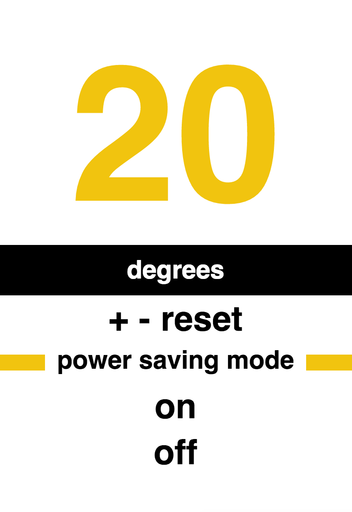
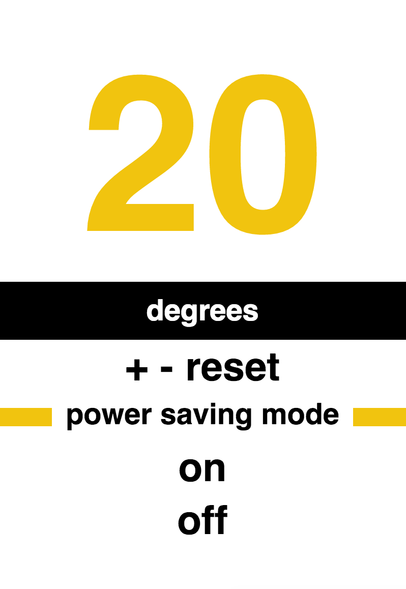

Why use RWD?
- Phones
- Tablets
- 'Phablets'
- Laptops
- Desktops
- Wearables
 

How do you do it?
- Use relative measurements instead of px
- Set up the viewport
- Add breakpoints to your CSS
Relative measurements
.container {
width: 800px;
}
img {
max-width: 250px;
height: 100px;
}
Relative measurements
.container {
width: 80%;
}
img {
width: 10em;
height: 10em;
}
Set up the viewport
- meta - Describes some aspect of the contents of a page
- viewport - Instructions for the browser to render content dependent on the screen size
- width=device-width, initial-scale=1 - The browser will render the screen in device independent pixels
Add breakpoints to your CSS
@media screen and (max-width: 320px) {
/* CSS styles for phones go here */
}
- @media screen - Media query that only applies to screens
- (max-width: 320px) - Styles will only apply when the viewport is less than 320px wide
Good Practises
- Breakpoints should be decided by content, not by device
- Start from the smallest screen size, and work up from there, adding breakpoints as appropriate
- Ideal line length for text is 70-80 characters